Blok funkcjonalny
Kombinacyjny blok funkcjonalny to układ kombinacyjny o n wejściach i m wyjściach. Funkcja boolowska to jego szczególny przypadek — z jednym wyjściem.

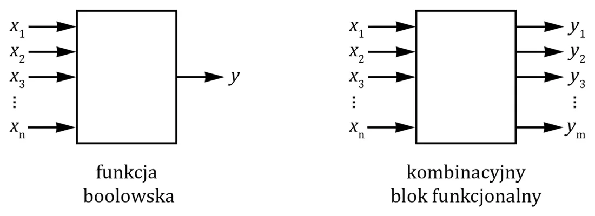
Przykłady: układy komutacyjne (multipleksery, demultipleksery, dekodery, konwertery kodów) i arytmetyczne (sumatory, komparatory).
Multiplekser (MUX)

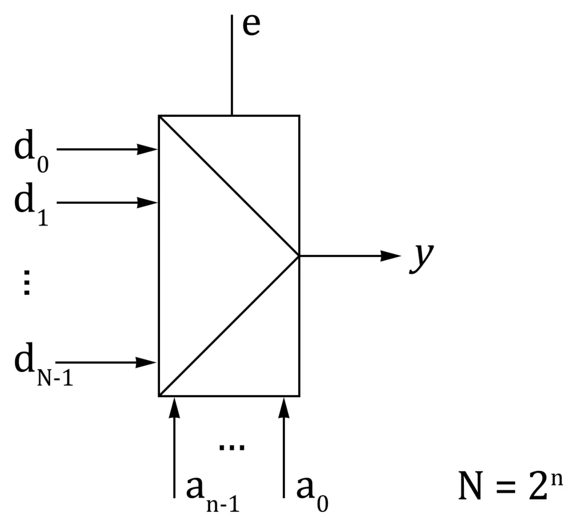
Multiplekser ma:
- n wejść adresowych (wybierających),
- N = 2n wejść informacyjnych (danych),
- jedno wyjście,
- wejście zezwolenia enable (zwykle: e = 1 — działa, e = 0 — wyłączony).
Działa jak przełącznik: na wyjście trafia sygnał z tego wejścia informacyjnego, którego numer podano na wejściach adresowych.

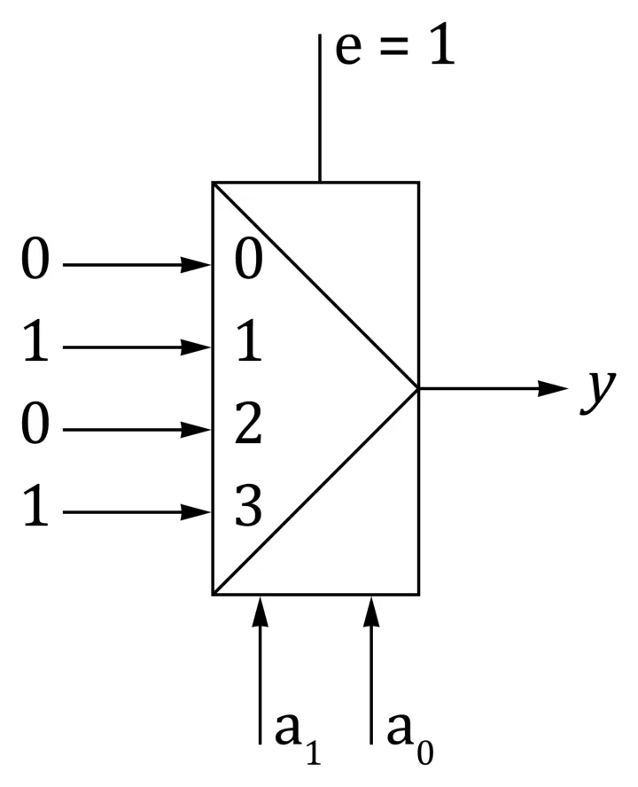
Po ludzku
Multiplekser to pilot do telewizora. Wejścia informacyjne to kanały, wejścia adresowe to numer kanału wciśnięty na pilocie, a wyjście to to, co widać na ekranie. (To porównanie pochodzi z materiałów do ćwiczeń.)
- Liczba wejść informacyjnych rośnie wykładniczo, więc dużych multiplekserów nie buduje się wprost — składa się je z mniejszych (kaskadowo).
- Multiplekser grupowy przełącza całe słowa (np. 4-bitowe szyny A i B), a nie pojedyncze bity.

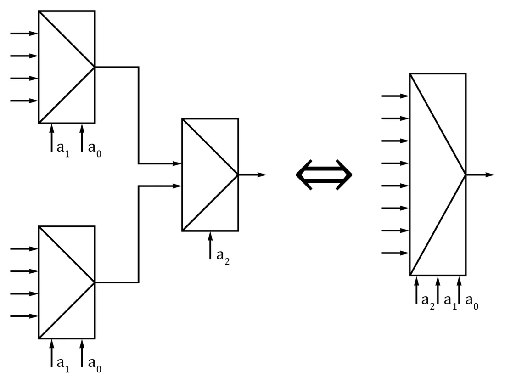
Demultiplekser (DMUX) i dekoder

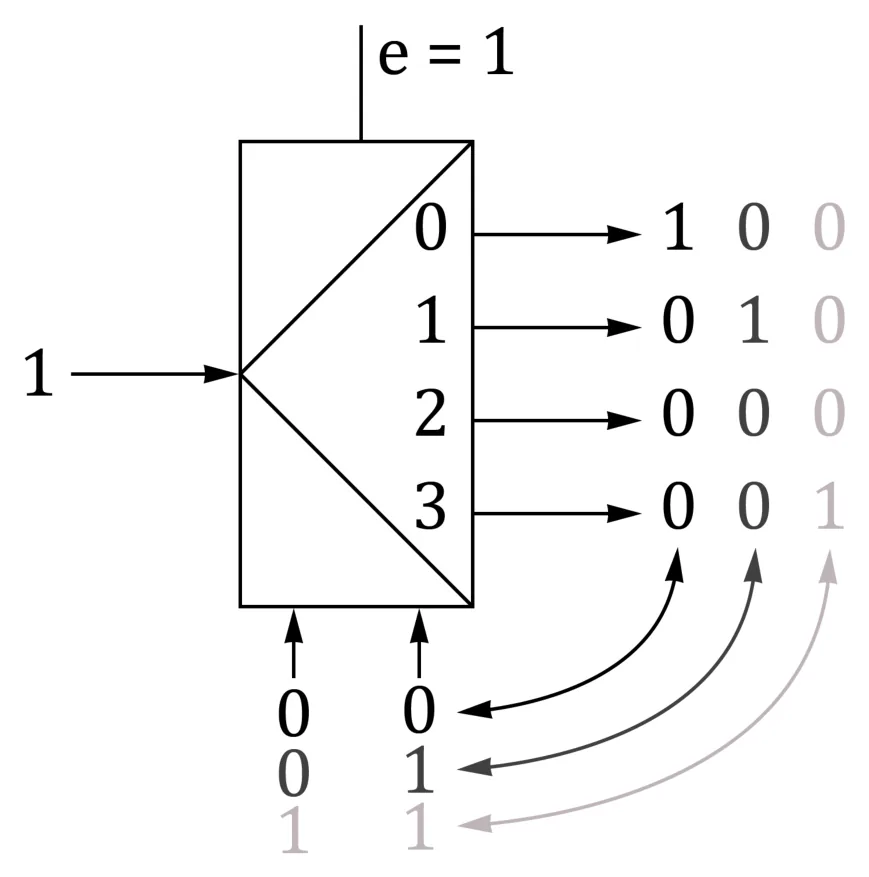
Demultiplekser działa odwrotnie: ma jedno wejście informacyjne, n wejść adresowych i N = 2n wyjść. Sygnał z wejścia trafia na to wyjście, które wskazuje adres.
Dekoder to demultiplekser, którego wejście jest na stałe równe 1: zamienia liczbę binarną (NKB) na kod „1 z N” — aktywne jest dokładnie jedno wyjście.
Multiplekser jako funkcja logiczna
Multiplekserem można zrealizować dowolną funkcję boolowską. Przykład z wykładu: y = Σ(1, 7, 11, 13, 14, 15), zmienne x3 x2 x1 x0.
Sposób 1: multiplekser o 4 wejściach adresowych (16 wejść)
Wszystkie cztery zmienne idą na wejścia adresowe. Na wejścia informacyjne o numerach 1, 7, 11, 13, 14, 15 podajemy 1, na pozostałe 0. Multiplekser po prostu „czyta tabelę prawdy”.

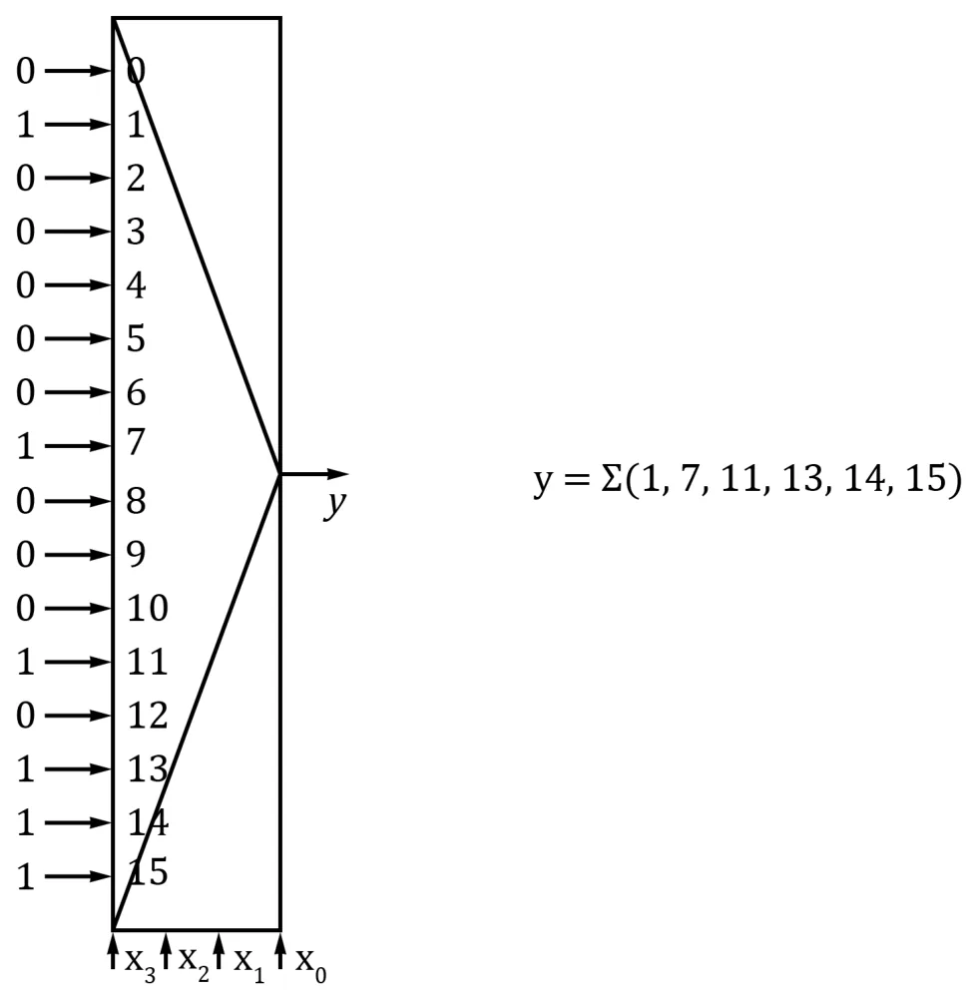
Sposób 2: multiplekser o 3 wejściach adresowych (8 wejść)
Trzy zmienne idą na adres, a czwarta — na wejścia informacyjne. Dla każdego adresu porównujemy dwie wartości funkcji (dla czwartej zmiennej równej 0 i 1):
| Funkcja dla „wolnej” zmiennej x = 0 / x = 1 | Co podać na wejście |
|---|---|
| 0 / 0 | 0 |
| 1 / 1 | 1 |
| 0 / 1 | x |
| 1 / 0 |
Wariant A — adres x2 x1 x0, wolna zmienna x3 (porównujemy wiersze k i k + 8):
| Wejście MUX | 0 | 1 | 2 | 3 | 4 | 5 | 6 | 7 |
|---|---|---|---|---|---|---|---|---|
| y dla x3=0 (wiersze 0–7) | 0 | 1 | 0 | 0 | 0 | 0 | 0 | 1 |
| y dla x3=1 (wiersze 8–15) | 0 | 0 | 0 | 1 | 0 | 1 | 1 | 1 |
| Podajemy | 0 | 0 | x3 | 0 | x3 | x3 | 1 |
Potrzebny jest jeden negator.

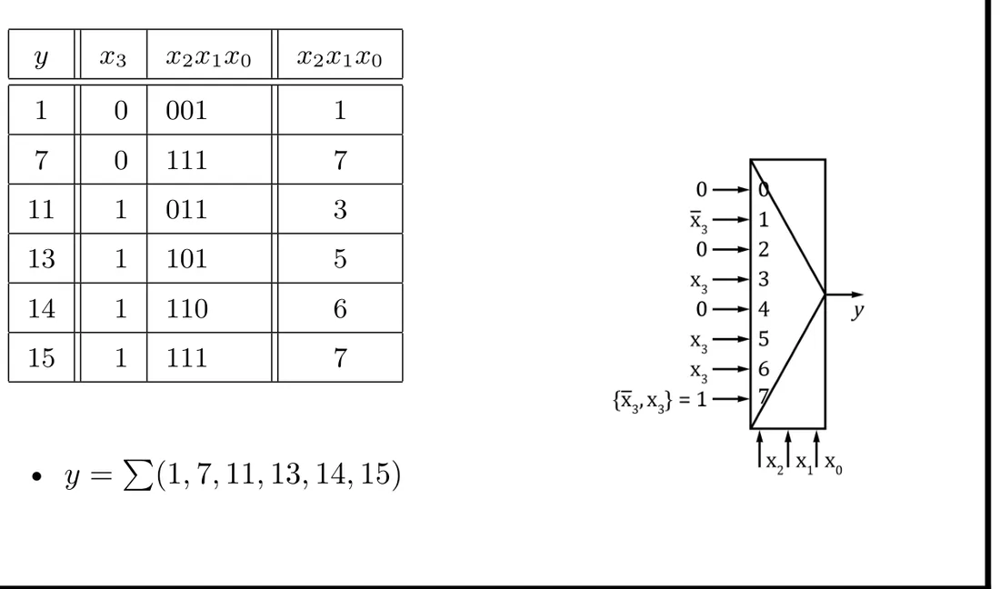
Wariant B — adres x3 x2 x1, wolna zmienna x0 (porównujemy sąsiednie wiersze 2k i 2k + 1):
| Wejście MUX | 0 | 1 | 2 | 3 | 4 | 5 | 6 | 7 |
|---|---|---|---|---|---|---|---|---|
| Wiersze tabeli | 0, 1 | 2, 3 | 4, 5 | 6, 7 | 8, 9 | 10, 11 | 12, 13 | 14, 15 |
| y (dla x0 = 0 / 1) | 0 / 1 | 0 / 0 | 0 / 0 | 0 / 1 | 0 / 0 | 0 / 1 | 0 / 1 | 1 / 1 |
| Podajemy | x0 | 0 | 0 | x0 | 0 | x0 | x0 | 1 |
Tym razem negacja nie jest potrzebna — wybór wolnej zmiennej ma znaczenie.
Sposób 3: multiplekser o 2 wejściach adresowych (4 wejścia)
Adres to x3 x2, a na każde wejście podajemy funkcję zmiennych x1, x0, odczytaną z jednego wiersza mapy Karnaugha:

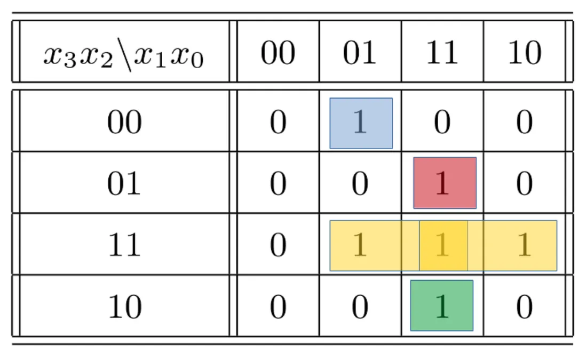
| x3 x2 | Funkcja na wejściu |
|---|---|
| 00 | · x0 |
| 01 | x1 · x0 |
| 11 | x1 + x0 |
| 10 | x1 · x0 |
Kody liczbowe
| Kod | O co chodzi |
|---|---|
| NKB (naturalny kod binarny) | zwykły system dwójkowy, liczby bez znaku |
| 1 z N | w słowie zawsze dokładnie jedna jedynka |
| HEX | zapis szesnastkowy |
| Graya | sąsiednie słowa różnią się jednym bitem |
| BCD | każda cyfra dziesiętna osobno na 4 bitach: 123 → 0001 0010 0011 |
| ZM (znak–moduł) | najstarszy bit to znak, reszta to wartość bezwzględna |
| U1 (uzupełnień do 1) | liczba ujemna = zanegowane bity modułu |
| U2 (uzupełnień do 2) | najstarszy bit ma wagę ujemną |
NKB
Bity numerujemy od zera z prawej strony; wagi to 1, 2, 4, 8, 16, 32, 64, 128. Na N bitach jest 2N różnych wartości (8 bitów: 0…255).
Znak–moduł i U1
- ZM: −24 = 1 0011000, 118 = 0 1110110. Zakres ±(2N−1 − 1). Wada: są dwa zera (+0 i −0).
- U1: liczby dodatnie jak w ZM; ujemne — z zanegowanymi bitami modułu: −86 w ZM to 11010110, w U1 to 10101001. Też dwa zera.
Kod U2 — ten, którego naprawdę używają komputery
Najstarszy bit ma wagę ujemną, pozostałe — dodatnie:
- Zakres: od −2N−1 do 2N−1 − 1 (8 bitów: −128…127; 4 bity: −8…7).
- Zero ma tylko jedną reprezentację; kod jest pełny (2N wartości).
- Liczby dodatnie wyglądają tak samo jak w NKB.
- Najstarszy bit mówi o znaku: 1 = ujemna.
Przykłady 4-bitowe z materiałów do ćwiczeń: 1111 = −8+4+2+1 = −1, 1000 = −8, 0111 = 7.
Liczba przeciwna: zaneguj wszystkie bity i dodaj 1.
Po ludzku
Licznik kilometrów w samochodzie, który cofasz. Z 0000 cofnięcie o jeden daje 9999 — i umawiamy się, że 9999 znaczy „−1”. W U2 jest tak samo, tylko dwójkowo: 0000 − 1 = 1111, czyli −1.
Dodawanie i odejmowanie w U2
- Dodajemy tak samo jak w NKB, bez patrzenia na znaki.
- Przeniesienie z najstarszego bitu ignorujemy.
- Odejmowanie to dodanie liczby przeciwnej: a − b = a + (−b). Wystarczą więc negacja i sumator.
| Działanie | Zapis | Wynik |
|---|---|---|
| 25 + (−1) | 00011001 + 11111111 | (1) 00011000 = 24 ✓ |
| 25 + (−56) | 00011001 + 11001000 | 11100001 = −31 ✓ |
| (−25) + (−56) | 11100111 + 11001000 | (1) 10101111 = −81 ✓ |
| 112 + 113 | 01110000 + 01110001 | 11100001 = „−31” ✗ przekroczenie zakresu |
| (−75) + (−56) | 10110101 + 11001000 | (1) 01111101 = „+125” ✗ przekroczenie zakresu |
Przekroczenie zakresu (overflow) może się zdarzyć tylko wtedy, gdy dodajemy dwie dodatnie albo dwie ujemne, a wynik „nie mieści się”. Widać to po znaku: z dwóch dodatnich wyszła ujemna albo odwrotnie.
Wykrywanie sprzętowe: patrzymy na dwa przeniesienia przy najstarszym bicie — wchodzące (CIN) i wychodzące (COUT). Przekroczenie jest wtedy i tylko wtedy, gdy są różne:

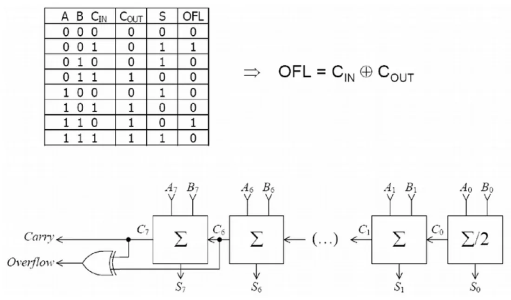
Inne pułapki U2: zakres jest niesymetryczny (dla 8 bitów −128 istnieje, a +128 nie), a zwiększenie 127 o 1 daje −128.
Liczby z ułamkiem
- Stałoprzecinkowe: umawiamy się, że część bitów to część całkowita, a reszta — ułamkowa. Np. 5 + 3 bity w U2 — wagi: −16, 8, 4, 2, 1, ½, ¼, ⅛. Wtedy 11001110 = −16 + 8 + 1 + ½ + ¼ = −6¼. Zakres: od −16 do 15⅞, dokładność ⅛.
- Zmiennoprzecinkowe: mantysa · 2wykładnik.
Przy skończonej liczbie bitów niektóre liczby zapisują się z błędem, a niewymierne — zawsze.
Sumator
Dodawanie pisemne w systemie dwójkowym:
| 76 | 01001100 |
| + 118 | 01110110 |
| = 194 | 11000010 |
Na każdej pozycji sumujemy trzy bity: ai, bi i przeniesienie ci z poprzedniej pozycji; dostajemy bit sumy i przeniesienie dalej. Robi to sumator jednobitowy (pełny):

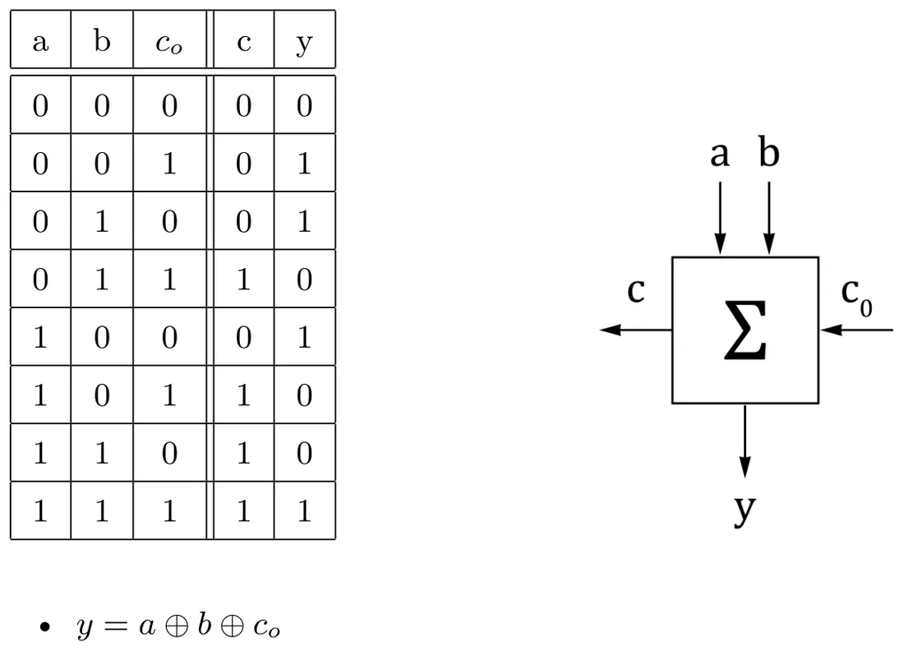
Sumator n-bitowy to kaskada sumatorów jednobitowych: przeniesienie z jednego wchodzi do następnego.

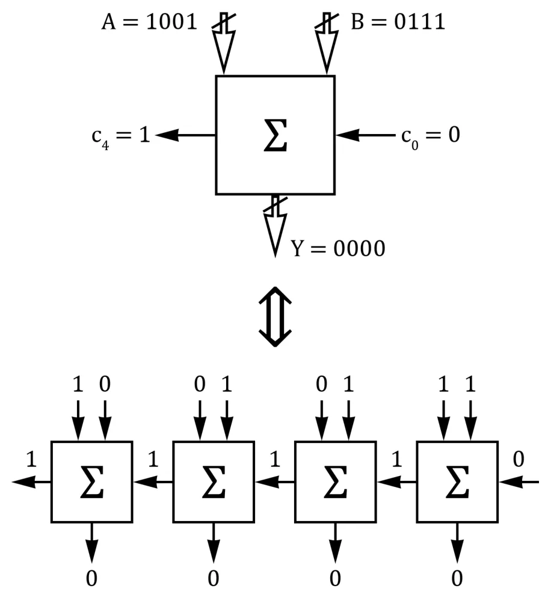
Dla liczb bez znaku przeniesienie z najstarszego bitu (cn = 1) oznacza, że wynik się nie zmieścił: 152 + 118 = 270 na 8 bitach daje 00001110 (= 14) i przeniesienie 1. Można je traktować jako dodatkowy, najstarszy bit wyniku.
Od autora strony (nie z wykładu)
Na slajdzie przy tym przykładzie dodawania jest literówka: drugi składnik podpisano „188”, a zapis 01110110 to 118 (76 + 118 = 194).
Komparator i ALU
Komparator porównuje dwie liczby n-bitowe i mówi, czy A < B, A = B, czy A > B.
ALU (Arithmetic Logic Unit, jednostka arytmetyczno-logiczna) to układ kombinacyjny, który wykonuje operacje arytmetyczne i logiczne na dwóch liczbach (albo na jednej).

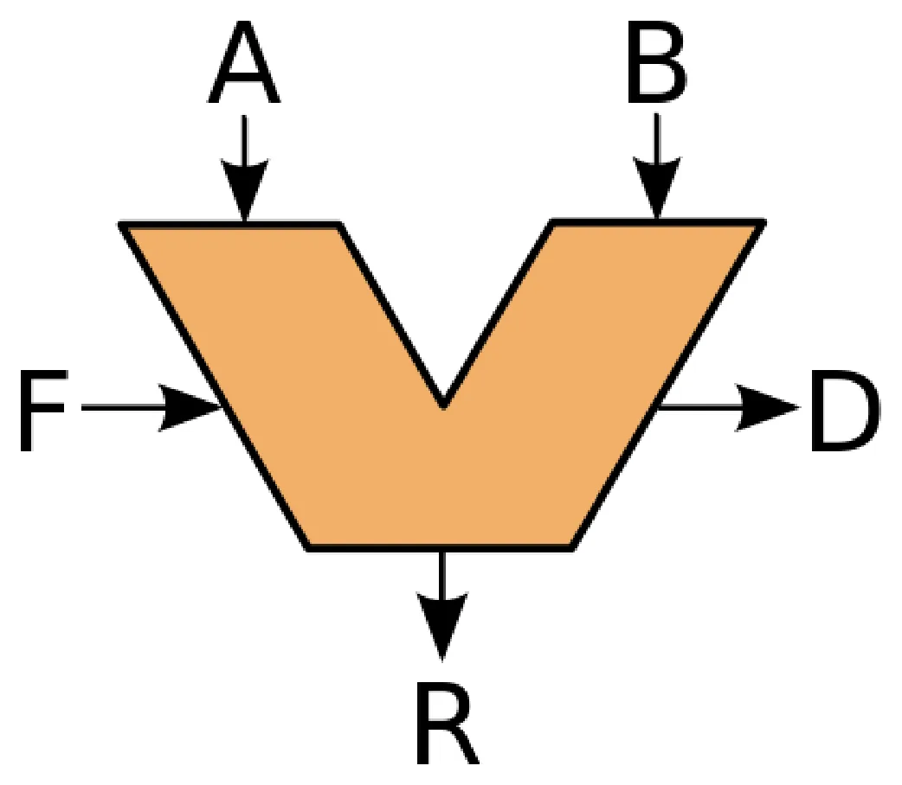
- A, B — dane wejściowe,
- F — kod operacji (co ma policzyć),
- R — wynik,
- D — status, czyli flagi (np. wynik równy zero, przekroczenie zakresu).
Najprostsza realizacja: wszystkie operacje liczą się jednocześnie, a multiplekser sterowany kodem F wybiera, który wynik trafia na wyjście.

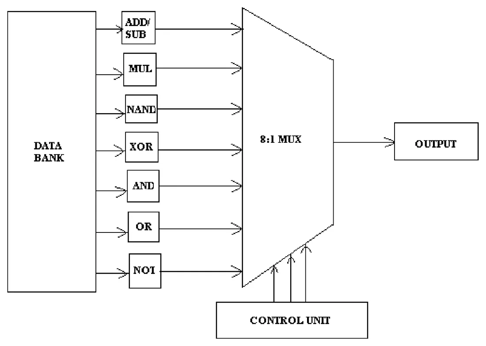
Zadania na ćwiczenia (ze slajdu)
- Zrealizować daną funkcję na multiplekserze o czterech wejściach adresowych.
- To samo na multiplekserze o trzech wejściach adresowych i co najwyżej jednym negatorze.
- Układ wykrywający przekroczenie zakresu dla liczb 4-bitowych w U2.
- 4-bitowe ALU z czterema działaniami (na slajdzie: 00 ADD, 01 NEG, 10 XOR, 11 AND) i flagami Z (wynik zero) oraz C (przekroczenie zakresu).
Krok po kroku: Ćwiczenie 9.